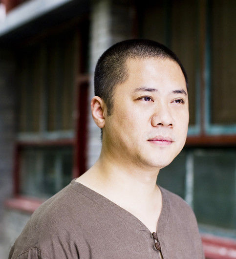
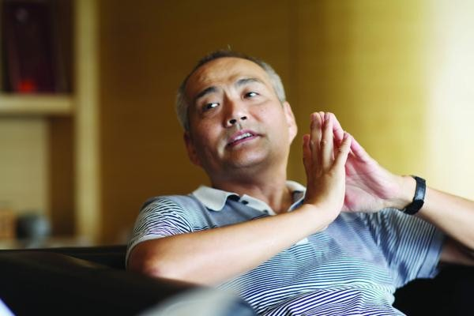
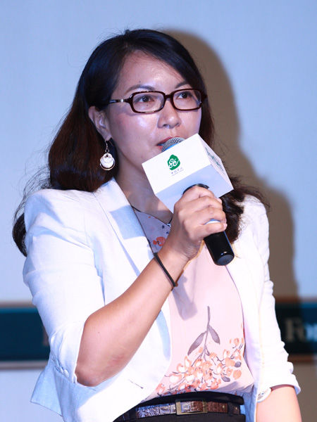

扫一扫，关注最新活动信息
传承医学宝典，弘扬中医学精髓
2015年是中医药互联网爆发年。
这一年，中医互联网创业百花齐放：微中医、上医网、金华佗、易中医、立时诊、冬日中医、中医 宝、把把脉（北京）、看中医、把脉（深圳）、快问中医、云中医，天人中医。
这一年，中医理疗O2O百舸争鸣：熊猫拿拿，推拿狮，功夫熊、筋骨棒、九阿哥、理大师、7点钟、康熙来了。
这一年，中医馆所利好不断：和顺堂，固生堂，君和堂等与资本接下良缘。
这一年，多家上市公司涉足中医药互联网：康美药业，量子高科。
这一年，多点执行书写中医时代变革大背景！
中医药产业，面对互联网，正在遭遇千年未有之大变局，作为行业从业者，我们该何去何从？
2015年12月18日，首届中医药互联网年会，行业人士齐聚深圳，我们一齐寻找答案！
梁冬
正安中医创始人及董事长、中国实效好中医评选委员会主席、中国传媒大学客座教授
梁冬先生以传承中医文化和中国传统文化为使命，创立了正安中医、正安文化及正安生活连锁机构；并且全身心致力于 中国古老中医学的传承研习与传播推广。目前正安中医旗下在北京拥有三家连锁诊所，深圳拥有一家诊所；杭州和四川成都 的医馆也在积极筹建当中，规模在逐年扩大。
宋刚
和顺堂创始人
2005年成立和顺堂医药有限公司。08年成功竞得精品中药饮片生产项目用地。09年与深圳津村董事长中村先生签署了 “技术使用许可和技术指导备忘录”，这标志着和顺堂拥有了完整的、世界一流的精品中药生产和质量保证体系。2013年今 日国际控股集团有限公司与协会发起单位深圳市和顺堂医药有限公司签署战略合作协议。
陆勤超（Cherry Lu）
红杉资本中国基金副总裁
陆勤超女士一直在医疗领域从事市场及医院项目投资合作工作积累了丰富的行业知识和经验。 红杉资本共有近30支基金，拥有近100亿美元总管理资本，曾投资过苹果电脑、思科、甲骨文、雅虎和谷歌、 Paypal，红杉资本中国基金以高质量、快速增长的公司为投资目标，并重点关注科技与传媒、消费品及现代服务业、 健康产业、能源与环保四个方向。
| 12月18号 上午 | 中医与文化 | 梁冬（正安中医馆创始人） |
| 互联网进入中医药领域创业 | 陆勤超（红彬资本医疗投资负责人） | |
| 多点执业对中医药市场的影响 | 宋钢（和顺堂创始人） | |
| 中医馆连锁探索 | 涂志亮（固生堂创始人） | |
| 中医馆互联网探索 | 潘学才（君和堂创始人） | |
| 论坛时间 | 主持人：甘强 |
| 12月18号 下午 | 微信公众号运营，半年时间，20万真实中医粉丝，我们是如何做到的？ | 傅昱豪（微中医创始人） |
| 投资人眼中的问诊互联网 | 曾峥（启赋资本合作人） | |
| 把脉是如何切入中医药市场的 | 夏天宇（把把脉创始人） | |
| 话题待拟 | 戴韵峰（金华佗创始人） | |
| 话题待拟 | 李祖赟（冬日中医创始人） | |
| 话题待拟 | 主持人：甘强 | |
| 论坛时间 | 主持人：高强 |


11月1日前报名：200元
12月18日前报名：500元
扫一扫，关注最新活动信息
传承医学宝典，弘扬中医学精髓